Chapter 10 图
English¶
| English | Chinese | English | Chinese | English | Chinese |
|---|---|---|---|---|---|
| bipartite | 二分图 | adjacency matrix | 邻接矩阵 | isomorphic | 同构的 |
10.2 基础术语¶
-
定义：
-
二分图（bipartite）：简单图分成不相交的两部分，每条边都连接这两部分
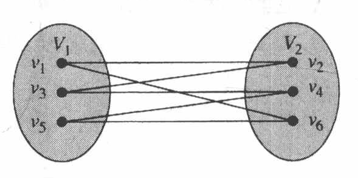
-
\(N(A)\) ：图的顶点集的子集 \(A\) 相邻的所有顶点组成的集合
- 完全匹配：在二分图 \(G=(V, E)\) ，划分成 \((V_1, V_2)\) 情况下，若 \(V_1\) 中每个顶点都是匹配边的端点（即 \(V_1\) 中顶点都被匹配到），或者匹配边的数量 \(\vert M\vert\) 等于 \(V_1\) 集合顶点的数量 \(\vert V_1\vert\) ，则称匹配 \(M\) 是从 \(V_1\) 到 \(V_2\) 的完全匹配
- 完全二分图 \(K_{3,3}\)
- 图的分类
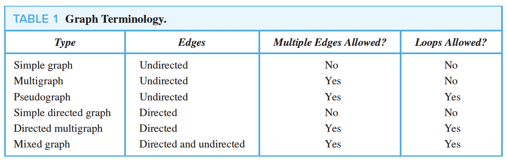
-
-
特殊的简单图
-
完全图 \(K_n\)
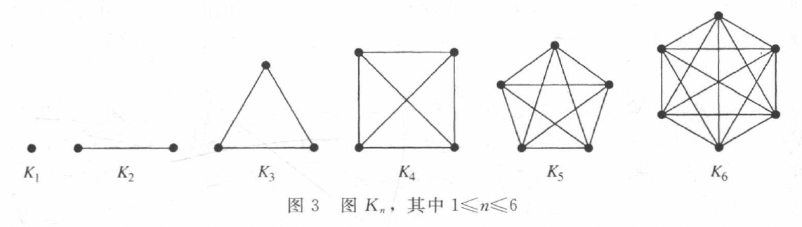
-
圈图 \(C_n\)
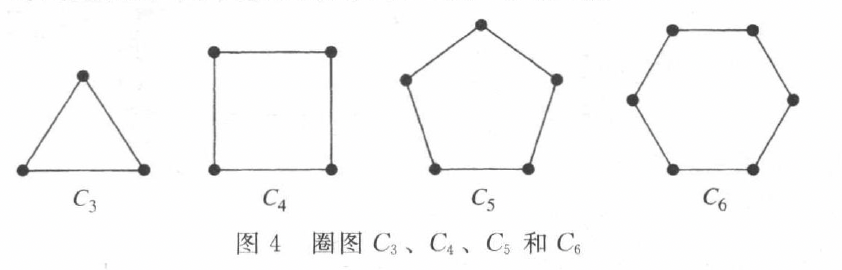
-
轮图 \(W_n\)
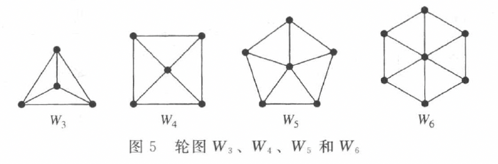
-
\(n\) 立方体图 \(Q_n\)
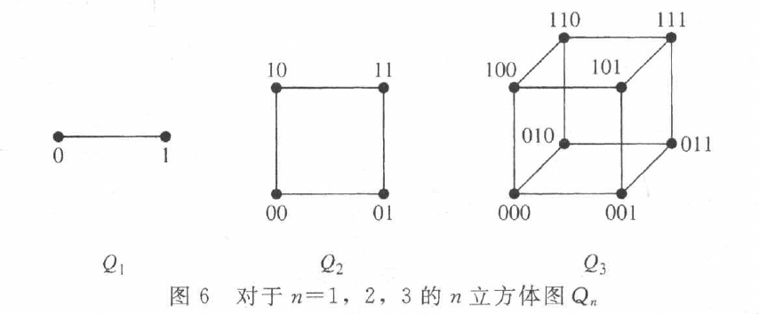
-
定理 霍尔婚姻定理¶
完全匹配的充分必要条件
带有二部划分 \((V_1, V_2)\) 的二分图 \(G = (V, E)\) 中有一个从 \(V_1\) 到 \(V_2\) 的完全匹配当且仅当对于 \(V_1\) 的所有子集 \(A\) ，有 \(|N(A)| \geq |A|\)
10.3 图的表示和同构¶
10.4 连通性¶
定理 1 顶点之间的通路数¶
设\(G\)是一个图，该图的邻接矩阵\(A\)相对于图中的顶点顺序\(v_1, v_2, \cdots, v_n\)（允许带有无向或有向边、带有多重边和环）。从\(v_i\)到\(v_j\)长度为\(r\)的不同通路的数目等于\(A^r\)的第\((i, j)\)项，其中\(r\)是正整数
10.5 欧拉通路与哈密顿通路¶
10.5.1 Euler Path and Circuit（遍历边）¶
- 定义：
- 欧拉通路
- 欧拉回路
- 欧拉图：具有欧拉回路的图
-
寻找欧拉回路的方法
- 找到一条回路，原图中去掉该回路
- 在去掉回路之后的图中重复上述操作
Example
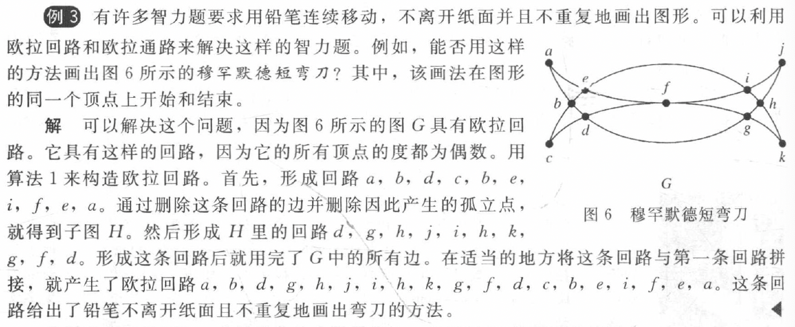
定理 1¶
含有至少2个顶点的连通多重图具有欧拉回路当且仅当它的每个顶点的度都为偶数
定理 2¶
连通多重图具有欧拉通路但无欧拉回路当且仅当它恰有2个度为奇数的顶点
定理 3 有向图（没有孤立点）¶
- 有欧拉回路
- 图为弱连通的
- 每个顶点的出度和入度相同
- 有欧拉通路但无欧拉回路
- 图为弱连通的
- 除了两个顶点外，其他所有顶点的入度和出度相等；两个顶点中一个顶点的入度比出度大1，另一个顶点的出度比入度大1
10.5.2 Hamilton Path and Circuit（遍历点）¶
- 带有度为1的顶点的图没有哈密顿回路
- 对于\(n\)个顶点的完全图，哈密顿回路的数量为\((n - 1)!/2\)
定理 1 狄拉克定理（充分）¶
如果 \(G\) 是有 \(n\) 个顶点的简单图，其中 \(n \geq 3\)，并且 \(G\) 中每个顶点的度都至少为 \(n/2\)，则 \(G\) 有哈密顿回路
定理 2 欧尔定理（充分）¶
如果 \(G\) 是有 \(n\) 个顶点的简单图，其中 \(n \geq 3\)，并且对于 \(G\) 中每一对不相邻的顶点 \(u\) 和 \(v\) 来说，都有 \(\text{deg}(u) + \text{deg}(v) \geq n\)，则 \(G\) 有哈密顿回路
定理 3 必要条件¶
若图 \(G\) 有哈密顿回路 ，则对于顶点集 \(V\) 的所有非空子集 \(S\) ，\(G-S\) 连通分量的数量小于等于 \(|S|\)
| Text Only | |
|---|---|
1 2 | |
10.6 最短路径问题¶
弗洛伊德算法（Floyd）¶
- 可以求出加权连通简单图中所有顶点对之间的最短路径长度
- 不能用来构造最短通路
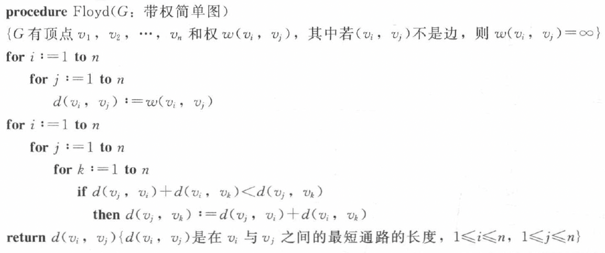
10.7 平面图（planar）¶
-
定义：
-
平面图：在平面中画出一个图，边没有任何交叉
Example
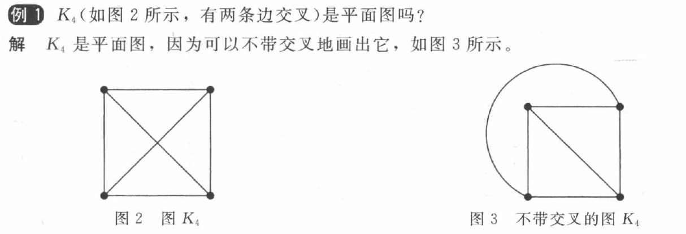
-
面（region）
-
定理 1 欧拉公式¶
设 \(G\) 是带 \(e\) 条边和 \(v\) 个顶点的连通平面简单图。设 \(r\) 是 \(G\) 的平面图表示中的面数，则 \(r = e - v + 2\)
推论 1¶
设 \(G\) 是带 \(e\) 条边和 \(v\) 个顶点的连通平面简单图，其中 \(v \geq 3\)，则 \(e \leq 3v - 6\)
推论 2¶
若 \(G\) 是连通平面简单图，则 \(G\) 中有度数不超过 \(5\) 的顶点
推论 3¶
若连通平面简单图有 \(e\) 条边和 \(v\) 个顶点，\(v\geq3\) 并且没有长度为 \(3\) 的回路，则 \(e\leq2v - 4\)
Notice!
利用推论证明是否是平面图。
定理 2 库拉图斯基定理¶
-
定义
-
同胚：两个图可以从一个相同的图通过初等细分得到，则这两个图同胚
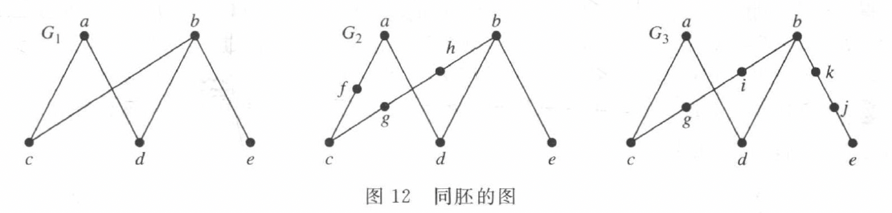
-
初等细分
-
-
定理 一个图是非平面图当且仅当它包含一个同胚于 \( K_{3,3} \)（完全二分图） 或 \( K_5 \) 的子图
Example
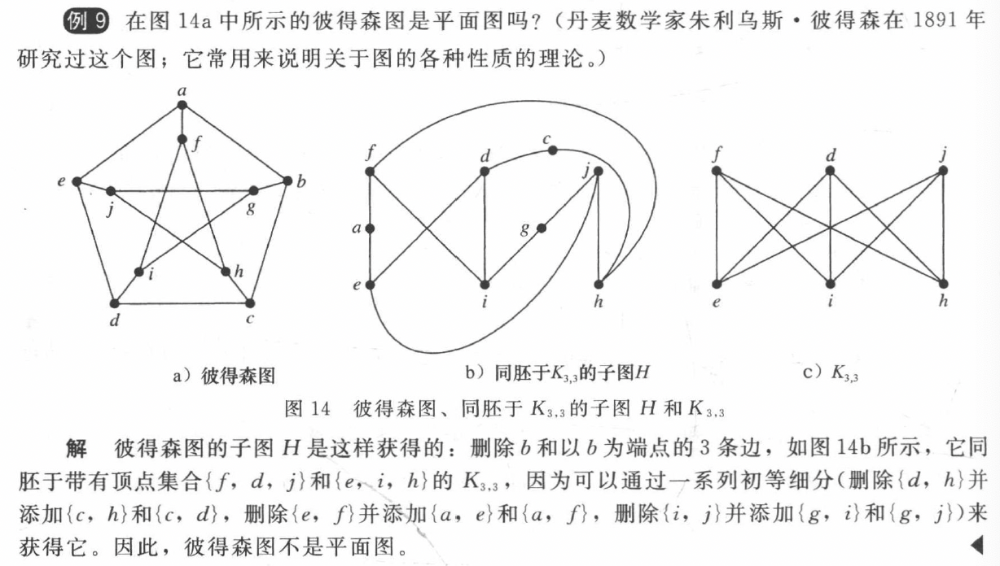
10.8 图着色¶
- 定义
- 简单图的着色：对每个顶点指定颜色，每对相邻两个顶点的颜色不同
- 图的着色数（chromatic number） \(\chi(G)\)：最少颜色数
定理 1 四色定理¶
平面图的着色数不超过 \( 4 \)
常用结论¶
- \(\chi(K_n) = n\)
- \(\chi(K_{m,n}) = 2\)
-
\[ \chi(C_n) = \begin{cases} 2, & \text{当 } n \text{ 为正偶数且 } n \geq 4 \text{ 时} \\ 3, & \text{当 } n \text{ 为正奇数且 } n \geq 3 \text{ 时} \end{cases} \]